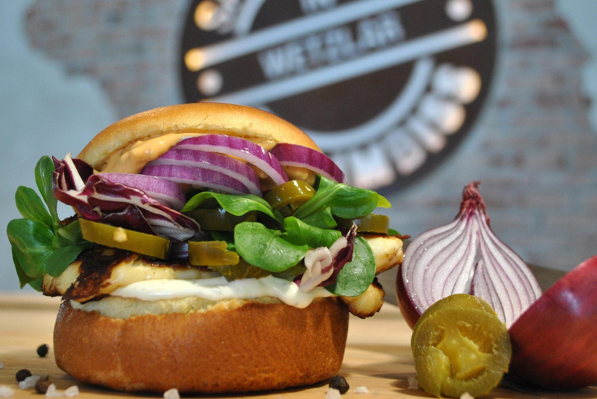

La Burger Clásica: El Origen del Sabor
Historia de la hamburguesa clásica, curiosidades, cómo prepararla en casa.
Leer másBurger del Mes: Tex-Mex Picante

Presentación de la “burger del mes”, ingredientes destacados, recomendación de bebida para acompañar.
Leer másVeggie Deluxe: Hamburgesa Vegetariana
Beneficios de las hamburguesas vegetarianas, tips de sustitutos de carne, y sugerencias de aderezos.
Leer másTop 5 Hamburguesas Locales que Debes Probar

Ranking de hamburguesas locales, breve descripción de cada una, qué las hace especiales.
Leer másMordiendo el Futuro: Tendencias Geek en Hamburguesas

Recetas con toque geek o tecnológico, hamburguesas temáticas de películas o videojuegos.
Leer más